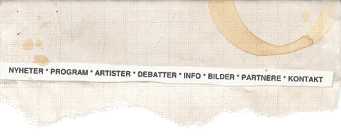

| Spisestedet På Høyden 19:00 Baconkveld Bill.: 85 kr |
| Kvarteret - Speilsalen 13:00 samfunnslunsj om korrupsjon i bistand med harald mathisen fra CMI og eirik lunden fra NORAD. Bill.: Gratis |
Kvarteret - Teglverket 19:15 Upop-møte: Anorexia nervosa Bill.: 20 kr |
|
Landmark 17:00 Kunstkveld med performance, foredrag og videovisninger av blant andre Mette Hellesnes Bill.: Gratis | |
|
Kvarteret 19:00 Feministdebatt Bill.: 20 kr 22:30 Morfar 23:30 Kim Hiorthøy 00:15 Dj Joakim Haugland Bill.: 120 kr |
Kvarteret - Speilsalen 13:00 Samfunnslunsj om USA-valget 2006 Bill.: Gratis |
|
Magnus Barfot 21:00 Videodrome MB1 - Bill.: 40 kr |
Landmark 21:00 Isle of You 21:40 A Hawk and a Hacksaw(US) Bill.: 70 kr |
| Kvarteret -Teglverket 22:30 Norsk Rock 23:30 No Torso 00:30 Fence |
Kvarteret - Storelosjen 21:30 Leiv Reed 22:30 Unknown Joe 23:30 Doug Hoekstra(US) 00:30 Thomas Denver Jonsson (S) Bill. Helhus: 70 kr |
Kvarteret - Speilsalen 13:00 Debatt mellom lånekassen og NSU Bill.: Gratis |
| Magnus Barfot 21:00 Hukkle MB1 - Bill.: 40 kr |
Hulen 22:30 Whitest Boy Alive Bill.: 130 kr |
Café Opera 19:00 Anette Kathinka & Marit 20:00 Your Only Friends 21:00 Soda Fountain Rag Bill.: Gratis |
| Kvarteret - Teglverket 20:00 Stand-up i samarbeid med Daniel Simonsen og Immaturus 22:30 Zenzile 23:30 Stereo 21 00:30 Grand Island |
Kvarteret - Storelosjen 22:30 Davy Jones’ Locker 23:30 Crawling Duck Johnson 00:30 Mica Peak |
Kvarteret - Stjernesalen 21:00 Bergen Filharmoniske Orkester 00:00 Erik Sterb Bill. Helhus: 50 kr etter kl. 20 |
Kvarteret - Speilsalen 13:00 Humorflesk til lunsj, presentert av Livsstilsmagasinet Bill.: Gratis |
| Hulen 22:30 Brutal Kuk 23:30 Blisterhead (S) 00:30 Evil Beaver (US) Bill.: 70 kr |
Garage 22:00 Stöv 23:00 Blind Stereo 00:00 Monomen Bill.: 70 kr |
||
| Kvarteret - Teglverket 22:45 Sirka Ragnar 23:30 Samuel Jackson 5 00:15 Billy Mahonie (UK) |
Kvarteret - Storelosjen 21:30 Bushman's Revenge 22:15 Belgradeyard Soundsystem(Serbia) |
Kvarteret - Stjernesalen 22:45 The Royalties 23:30 Hypertext 00:15 The Alexandria Quartet 01:00 Totem Bill. helhus: 50 kr etter kl. 20 |
| Hulen 22:30 Kakkmaddafakka 23:30 Komakino (UK) Bill.: 60 kr |
Garage 22:00 66crusher 23:00 Vulture Industries 00:00 Zeenon 01:00 Madder Mortem 02:00 No Rest (BRA) Bill.: 80 kr |
Landmark 22:00 Powerblytt Bill.: 60 kr |